여덟 단계로 v2에 간다
단계 번호는 roadmap.md의 Phase 16(v1.0.8)에 이어 붙인다. 각 단계의 완료 기준은 숫자나 명령 결과로 적었고, 그 기준을 통과해야 다음 단계로 간다. 규모는 한 사람과 에이전트가 하는 기준의 추정이다.
순서와 버전

| 단계 | 버전 | 내용 | 규모 | 선행 |
|---|---|---|---|---|
| 지금 고칠 것 | 1.1 | 검증을 바꾼 기능만으로(affected 레벨, 에이전트의 full 차단), 이슈 단위 SDD 폴더와 키 규칙 | M | 없음 |
| P17 CLI 엔진 | 2.0.0-alpha | Node CLI, lock v2, init · plan · add · update · doctor · repair · uninstall, bash와 결과 동일성 | L | D3 |
| P18 배치 전환 | 2.0.0 | 포인터 → 복사·생성·병합, 하네스 중립 훅, worktree를 따라가는 훅, 배치 검사 | M | P17 |
| P19 worktree 운영 | 2.1 | wt 명령, 리포 옆 자리, IDE 설정, 용량 상한, Claude worktree 훅, 브랜치 규칙, CI·MR 템플릿 | M | P18 · D4 |
| P20 대시보드 · 스킬 목록 | 2.2 | 로컬 대시보드(처리할 일 · 진행 · 문서 · 작업 공간 · 하네스 · 스킬), 스킬 스캐너와 스킬 지도 | M | P18 |
| P21 킷 설계 단계 · 기획물 | 2.3 | /hx-intent(Intent·질문·스토리·Unit 분해), Unit → SDD 다리, 기획물 4종, 하네스별 역할 | L | P18 · P20 · D7 |
| P22 선택 모듈 | 2.4 | AI-DLC·Entire를 켜고 끄기, 버전 추적, AI-DLC → 공통 Unit 목록 어댑터, 공존·두 구성 시험 | M | P21 · D6 |
| P23 검증 확장 | 2.5 | 자체 리뷰 에이전트, 오픈소스 정적 분석과 품질 게이트, 승인 기록·강제 | L | P18 |
| P24 반영 · 운영 · 역수입 | 2.6 | 병합 뒤 문서 반영, 운영 기록 → 다음 Intent, 다층 단위 sync, 리포 간 조율 | M | P21 |
규모: M은 1~2주, L은 2~4주(추정). 버전은 릴리스 순서이고 작업은 의존이 허락하는 만큼 겹친다.
먼저: 킷 저장소 구조 이동
목표: 원본을 packages/로 옮기고 플러그인 폴더를 생성물로 바꾼다. 설치 결과는 v1.0.8과 같다(설계 02 §3.1).
만들 것
git mv만 하는 커밋:plugins/harness-kit/skills/hx-bootstrap/templates/→packages/templates/,setup.sh·lib/→packages/legacy-setup/, 설치 시험 →tests/.pnpm-workspace.yaml, 루트package.json(private),scripts/gen-plugins.mjs:packages/에서plugins/harness-kit/을 다시 만든다.tests/test_generated.py: 생성물과 원본이 바이트 단위로 같은지 본다. fast 검증 · CI에서 돈다.
완료 기준
- 이동 전후로
setup.sh를 같은 선택값으로 돌린 결과 폴더가 같다(diff 0). - 마켓플레이스 경로
./plugins/harness-kit로 설치한 플러그인의/hx-bootstrap이 그대로 돈다. git log --follow packages/templates/common/agents-rules/git-workflow.md가 이동 전 이력을 보인다.
지금 고칠 것
목표: 지금 쓰는 리포에서 검증 시간을 바꾼 범위만큼으로 줄이고, SDD를 이슈 단위로 만든다. v2 엔진과 상관없이 지금 bash·Python 코드로 고친다.
만들 것
- 검증
affected레벨: 바꾼 파일이 속한 모듈과 그 모듈을 쓰는 모듈의 검사(Gradle:모듈:check, pnpm 워크스페이스 필터, Python 패키지 단위, Go 패키지 단위). - 에이전트 세션의
--full차단 훅(사람 터미널·CI는 그대로), 테스트를 못 찾을 때 full 권고 대신 affected로 넓히거나 미검증 보고. - 여러 리포를 묶은 상위 게이트가 바뀐 도메인만 부르기, 단계별 소요 시간 기록(
.agents/state/verify-last.json). - 규칙·스킬·tasks 템플릿의 full 지시 정리("full 선택/이유" 칸 → "affected 결과 · CI full 링크").
- 이슈 단위 SDD:
new-feature.sh <이슈키> <이름>(Jira 키, 없으면<프로젝트키>-<번호>생성),issues/<키>-<이름>/,area:값, 보드의 영역별 묶음,sdd-layout.py migrate --dry-run. - 브랜치 이름 규칙을
<종류>/<이슈키>-<이름>으로 개정.
완료 기준
- knots 사본에서 파일 하나를 바꾼 작업의 changed 검증이 3분 안에, affected 검증이 15분 안에 끝난다.
- 에이전트 세션에서
bash scripts/verify.sh --full을 부르면 훅이 막고 안내를 출력한다(테스트). new-feature.sh HDRV3D-12 upload-cleanup이issues/HDRV3D-12-upload-cleanup/을 만든다. 키 없이 부르면<프로젝트키>-<다음 번호>가 붙는다.- knots 사본에서
migrate --dry-run이 영역 폴더 13곳의 이슈를 모두 목록으로 내고, 적용 뒤 보드 결과가 이전과 같다.
P17 CLI 엔진
목표: 에이전트 세션 없이 npx 한 줄로 v1.0.8과 같은 결과를 설치하고, 점검·복구·제거까지 한다.
만들 것
- 루트
package.json(bin: harness-kit, Node 18+). 템플릿은 지금 자리에 두고 패키지에 포함한다. packages/cli/src/(TypeScript → 단일 번들dist/cli.js): 명령과 핵심 모듈(레이어 해석 · 토큰 치환 · 작업 목록 · 해시 · lock).templates/layout.json:setup.sh안의 템플릿 폴더 → 설치 경로 매핑을 데이터로 꺼낸다.- lock v2 읽기·쓰기, v1(TSV) 읽기.
- 플러그인 스킬
hx-bootstrap·hx-update·hx-agent-add가 CLI를 부른다. Node가 없으면setup.sh로 내려간다.
완료 기준
- 대표 조합 10개에서
setup.sh와 CLI의 설치 결과가 lock을 빼고 파일 목록·내용 모두 같다. - 새 설치 직후
doctor --check가 exit 0. - 킷 파일 하나를 고친 뒤
update→.new생성,uninstall→ 고친 파일 하나만 남는다. - v1 설치 fixture에서
update가 lock v1을 읽어 v2로 쓴다. - 런타임 의존 패키지 0개(번들에 넣은 것 제외).
P18 배치 전환
목표: 손으로 유지하는 하네스 파일 78개를 0개로 만들고, 킷 훅이 worktree 안에서도 맞는 리포를 본다.
착수 전 확인
- Cursor·Copilot·Gemini CLI가
.agents/skills/를 읽는 최소 버전. - Kiro steering의 파일 참조 문법 지원 여부.
- Claude Code에서 같은 이름의 skill과 command가 함께 있을 때 어느 쪽이 뜨는지.
만들 것
- 하네스 어댑터 4개(그대로 읽기 · 복사 · 생성 · 병합 작업 목록). 링크는 쓰지 않는다.
.agents/hooks.json과 하네스별 훅 생성기, 역할 생성기(.agents/roles/*.md→ Claude md · Codex toml · Kiro json).- 킷 훅이 입력의
cwd로 대상 리포를 정하게 수정(보호 경로 · 세션 시작 · 검증 게이트). CLAUDE.md를@AGENTS.md가져오기와 Claude 전용 절로 줄인다.scripts/harness/check_layout.py와verify.shfast 연결, 진입 파일 24KB 경고, 링크 실패 시 복사 강등.- 업그레이드 공지 파일과 SessionStart 주입.
- 확장 층: 회사 팩(
packs)과 개인 층(.agents/local/) 배치, 같은 이름의 우선순위(프로젝트 → 팩 → 킷), 개인 층이 게이트를 끄는 설정은 무시하고 경고(05장).
완료 기준
- 4개 하네스 설치 뒤 하네스 폴더의 모든 파일이 lock의 link · render · merge 항목이다.
- 규칙 원본 한 줄 수정 → fast 검증 실패(
stale) →repair→ 통과. - worktree에서 연 Claude 세션이 worktree의 보호 경로에 쓰려 하면 훅이 막는다(테스트).
- 릴리스 점검표 4건: Claude
/hx-plan, Codex$hx-plan, Cursor/hx-plan, Kiro CLI 스킬 목록. - 원본 스킬을 고치면 동기화 훅이 복사본을 다시 만들고, 복사본을 직접 고치면 훅이 막는다.
core.symlinks=false환경에서도 설치 결과가 같다. - 회사 팩 파일이 킷
update뒤에도 그대로다. 개인 층에서 검증 게이트를 끄는 설정을 넣으면 무시되고doctor가 경고한다.
P19 worktree 운영
목표: 동시 구현의 변경이 섞이지 않고, 끝난 worktree가 남지 않고, IDE와 대시보드에서 보인다.
착수 전 확인
- submodule(도메인 리포) 안에서
git worktree add·remove가 문제없이 도는지. - IntelliJ에서 도메인 리포를 단독 프로젝트로 열 때 Worktrees 탭이 보이는지.
만들 것
scripts/harness/worktree.py:new(--docs는 문서 폴더만) ·list·open·done·gc.harness-kit.json의git절(base·worktreeRoot기본../<리포>.worktrees·maxPerRepo기본 3 ·ide)..worktreeinclude템플릿,.vscode/settings.json병합(git.detectWorktrees), ClaudeWorktreeCreate·WorktreeRemove훅.- 의존성 가져오기: pnpm·uv 안내, npm은 macOS APFS 복제. 포트 오프셋(
.env.worktree). git-workflow.md개정: worktree 규칙, base 설정, 이슈 키 브랜치, 병합하지 않는exp/.- 점유 CLI
prune(완료 세션 7일, 공지 30일 제안), CI 템플릿 3종(GitHub Actions · GitLab CI · GoCD), MR/PR 템플릿.
완료 기준
- 임시 리포에서 구현 세션 둘이 각자
wt new→ 커밋 → 서로의 변경이 상대 브랜치에 0줄 섞인다. wt done은 push 안 된 커밋이 있으면 지우지 않고, 끝났으면 지운다. 리포당 4번째wt new는 거부한다.wt new --docs로 만든 worktree에는 문서 폴더만 있고, 늘어난 용량이 그 폴더 크기 이하다.claude -w x가 리포 옆.worktrees/에 만들어진다(수동 점검).- macOS npm 프로젝트에서
wt new직후 늘어난 용량이 소스 파일 크기 + 50MB 이하다(APFS 복제). - 25MB 점유 상태 사본에
prune뒤 보존 기한 밖 기록 0건. 세 CI 템플릿이 모두verify.sh만 부른다.
P20 대시보드 · 스킬 목록
목표: 설치 뒤 문서와 진행 상황을 관리 페이지 하나에서 보고, 문서를 고쳐 저장·승인하고, 켜 둔 Claude 세션에 작업을 요청한다. 이 컴퓨터의 스킬을 단계별로 찾는다.
착수 전 확인
- Claude Code 세션 수신함 소켓으로 보내는 글의 형식과, 하네스 밖 프로세스가 보낸 글이 받아들여지는 조건.
만들 것
npx harness-kit dashboard: Node 표준 HTTP 서버, 127.0.0.1 전용, 읽기 전용, Markdown 렌더러는 번들에 포함.- 탭: 처리할 일 · 진행 · 문서 · 작업 공간 · 하네스 · 스킬. 검증·운영 탭은 자리만 두고 P23·P24에서 채운다.
verify.sh가 마지막 결과를.agents/state/verify-last.json에 남긴다.- 스킬 스캐너: 위치별
SKILL.mdfrontmatter 읽기, 플러그인은 켜 둔 것의 최신 버전만, 이름 중복 표시, 하네스 연결. .agents/skill-map.json기본값과 설명 낱말 추정,npx harness-kit skills [--stage].dashboard --export <폴더>: 스킬 탭을 뺀 정적 HTML.- 쓰기: 접속 토큰, 쓰기 범위(
.agents/docs/문서·승인 기록), 이슈 브랜치에 저장, 승인 버튼과approvers, AI가 낸 질문에 선택지로 답하는 화면. - 세션 등록(세션 시작 훅 →
.agents/state/sessions/)과 작업 요청(수신함 소켓, 없으면 deep link·대기함).
완료 기준
- SDD 이슈 20개 fixture에서 진행 탭의 상태가
board.sh결과와 모두 같다. - 문서 탭에서 SDD 세 문서·기능 문서·ADR이 렌더되어 열린다.
- 이 컴퓨터에서 스킬 탭의 위치별 개수가 같은 기준(중복 규칙 포함)의
find결과와 같다. - 서버가 127.0.0.1 밖에서 접속되지 않는다(테스트). 내보낸 HTML에 스킬 정보가 0건.
- 쓰기 범위 밖 경로로 저장하는 요청을 거부한다(테스트). 승인 버튼이
approvals.md에 승인자·시각·문구를 남긴다. - 문서를 저장하고 세션을 고르면 켜 둔 Claude 세션이 요청을 받아 작업을 시작한다(수동 점검).
P21 킷 설계 단계 · 기획물
목표: AI-DLC·Entire 없이 요구사항 하나가 Intent → Unit → SDD 이슈 → 기획물까지 킷만으로 나오고, 하네스마다 역할이 나뉜다.
만들 것
/hx-intent: Intent 문서(목표 · 범위 밖 · 성공 지표 · 제약 · 처리할 일), 질문 파일 모드(선택지와 답할 직무, 여럿이 답한다), 스토리와 EARS 수용 기준, NFR·위험 레지스터, Unit 목록과 의존 순서, 계약 Unit 먼저.- 공통 Intent·Unit 목록 형식(
intents/<Intent>/)과/hx-specify --from-unit. 계약 Unit의 design §6이 approved가 아니면 소비 Unit의/hx-plan이 멈춘다. - 기획물 4종 템플릿(와이어프레임은 HTML 원본, 나머지는 Markdown 원본 + HTML 렌더)과
/hx-screen-plan·/hx-design-plan·/hx-backlog. 스킬 지도에서 깔린 기획·디자인 스킬을 찾아 쓰고, 없으면 킷 템플릿을 쓴다. jira-workflow모듈 개편: Intent = 에픽, Unit = 작업 항목, Bolt = 하위 작업, 승인 게이트 = 상태 전이(05장). Unit마다 Jira 이슈를 만들고 받은 키로 SDD 폴더를 만든다. 사람이 Jira에서 승인 상태로 옮긴 기록을approvals.md로 가져온다.flow·roles설정과 역할 파일 생성(designer·documenter새로), 세션 시작 훅의 역할 안내, 인수인계·에이전트 브리프 템플릿.- 대시보드 진행·문서 탭에 Intent·Unit과 기획물 연결.
완료 기준
- AI-DLC·Entire를 설치하지 않은 리포에서 예시 요구사항 하나 → Intent → Unit 3개와 의존 순서 → SDD 이슈 3개가 나오고 대시보드에 그 순서로 보인다.
- 계약 Unit이 approved가 아니면 소비 Unit의
/hx-plan이 멈추고 이유를 출력한다. - 기획물 4종이 생기고 대시보드 문서 탭에서 열린다. 디자인 스킬이 깔린 장비와 안 깔린 장비에서 모두 동작한다.
- 백로그의 Unit 상태가 SDD 보드와 같다.
/hx-analyze가 Intent ↔ 이슈 추적 누락을 보고한다.
P22 선택 모듈: AI-DLC · Entire
목표: 두 도구를 원본 그대로 켜고 끄고 올릴 수 있고, 켜도 꺼도 킷 흐름이 그대로 돈다.
착수 전 확인
- AI-DLC v2에서 설계 단계까지만 돌리는 스코프가 있는지, 없으면 구현 쪽 스테이지 산출물의 경로와 형식.
- AI-DLC Intent·Unit 산출물의 경로·형식(공통 Unit 목록 어댑터의 입력).
- AI-DLC와 Entire가 하네스별로 넣는 훅 목록.
만들 것
add aidlc·remove aidlc: 설치 확인 → 설계 하네스에aidlc config→ 생긴 파일을 외부 소유로 기록 → 훅 병합 →flow.design = "aidlc". 끄면 킷 훅·등록만 빼고kit으로 돌아간다.- AI-DLC 산출물 → 공통 Intent·Unit 목록 어댑터.
/hx-specify --from-unit은 그대로 쓴다. add entire·remove entire:entire enable→ 구현 하네스만entire agent add→.entire/settings.json기본값(커밋 연결, 비밀값 마스킹), push 기본값(D6), 커밋 트레일러 허용, GitLab squash 커밋 메시지 템플릿 안내, 대시보드 체크포인트 칸(GitLab에는 entire.io 웹 보기가 없다).outdated와 검증 버전 범위,doctor의 버전·훅·역할 불일치 검사.- 두 구성 시험: 킷만 / 킷 + AI-DLC + Entire로 요구사항 하나를 운영 기록까지 돌리는 e2e fixture.
완료 기준
- 임시 리포에 킷 → AI-DLC → Entire 순서와 그 역순으로 설치한다. 킷
update·uninstall뒤 다른 두 도구의 파일·훅 해시가 그대로다. - 같은 요구사항을 킷 설계와 AI-DLC 설계로 각각 돌리면 Unit 목록 형식이 같고,
/hx-specify --from-unit결과의 항목 구성이 같다. - 체크포인트가 구현 하네스 세션에만 생긴다(Codex 리뷰 세션 0건).
remove aidlc·remove entire뒤 두 구성 시험의 "킷만" 쪽이 통과한다. 지워진 산출물 파일은 0개다.
P23 검증 확장
목표: 코드 리뷰·보안 스캔·품질 조회·승인 기록이 MR마다 남고, 심각한 지적이 열려 있으면 승인할 수 없다.
만들 것
/hx-review(reviewer역할, 기본 Codex): MR diff · SDD · 규칙 · 스캔 결과를 읽고 MR 코멘트와 로컬 보고서를 남긴다. 구현 세션이 처리 결과를review.md로 정리해 커밋한다./hx-scan과 스캐너 묶음(gitleaks · Semgrep CE · OSV-Scanner 또는 Trivy · 스택별 도구), SARIF를.agents/reports/에. CI 템플릿에 스캔 단계.- 정적 분석 조합(D8): 공통 층(Semgrep/Opengrep · gitleaks · OSV-Scanner/Trivy · jscpd · lizard)과 스택별 도구, SARIF 변환, 새로 생긴 문제만 막는 품질 게이트(
quality-gate.json·quality-baseline.json), MR 요약 코멘트. - 승인 기록
approvals.md, 승인 어휘 규칙, base 직접 push 금지 설정, 승인 기록 없는completed이동을 막는 훅. - 시험 탐색 보강(knots
verify_native·verify_suites), 대시보드 검증 탭.
완료 기준
- fixture에 심은 결함 3종(비밀값, 문자열로 조립한 SQL, 알려진 취약 의존성)을 스캔이 모두 잡는다.
- requirements의
R#하나를 구현하지 않은 fixture에서 리뷰가 그 누락을 보고한다. - CRITICAL이 열린 상태에서
verify.sh --full이 실패한다. 승인 기록 없이completed로 옮기면 훅이 막는다.
P24 반영 · 운영 · 역수입
목표: 병합 뒤 문서가 따라오고, 운영 기록이 다음 요구사항이 되고, 다층 리포를 킷 기능으로 관리한다.
만들 것
- 병합 뒤 문서 반영 제안(
documenter역할, Kiro 훅 또는 CI), 운영 기록 템플릿, 운영 기록 → 다음 Intent 입력 경로(킷/hx-intent, AI-DLC를 켰으면 AI-DLC), 대시보드 운영 탭. - 배포 단계: design에 배포 계획·롤백 칸, 배포 승인 기록, 병합 뒤 자동 배포·E2E(두 번 실패하면 멈춤)를 CI 템플릿 선택 단계로.
- CLI
sync:units.json으로 공통 원본을 단위마다 배치, 단위별 lock,sync --check. multi-harness모듈 보강: ABOUT, 리포 간 조율 규칙, 부모 SDD 목록 SHA 열, submodule 점검, 도메인 간 경로 가드.
완료 기준
- 병합 1건에서 기능 문서 갱신 제안이 생긴다. 운영 기록 1건에서 다음 요구사항 초안이 생긴다.
- knots 사본에서
sync.py --check와harness-kit sync --check의 결과가 단위 23곳 모두 같다. - hdr 형태 fixture에서 리포 두 개에 걸친 기능 하나를 계약 → 병렬 → 경계 검증 → 순서 커밋으로 끝낸다.
기존 프로젝트 이전
공통 절차
- 점검
npx harness-kit doctor. 읽기만 한다. - 계획
npx harness-kit update --dry-run. 바뀔 파일과.new가 생길 파일을 사람이 본다. 진행 승인 - 적용
update→.new파일을 하나씩 병합한다. - 검증
bash scripts/verify.sh --full과doctor --check. - 커밋이전 커밋 하나로 남긴다. 커밋 승인
knots 작업은 knots 작업 공간 규칙을 따른다(~/knots-work/ 아래 worktree로만 만들고, 끝나면 같은 세션에서 지운다).
hr-vision-3d (수제 하네스)
- v2.0 뒤:
init --adopt --dry-run. 이미 있는 파일은 모두 사용자 소유로 기록하고 없는 것만 설치한다. - v2.5 뒤: 승인 강제를 켜면서
.claude/settings.local.json의git push·git commit무조건 허용을 정리한다. - v2.6 뒤: submodule 두 곳의 규칙 사본을
sync로 합친다.
knots-platform (v1.0.7 + 별도 배포 도구 + AI-DLC)
- v2.0 뒤:
doctor로 현황만 본다(lock v1, 포인터, 외부 파일 362개, 단위 23곳). - v2.4 뒤: 루트
update. lock v2, 포인터 → 복사본, 역할 배정, 손으로 관리하던 루트.claude/settings.json을 병합 대상으로. 이미 깔린 AI-DLC는add aidlc로 외부 소유 등록하거나, 쓰지 않으면flow.design = "kit"으로 두고 AI-DLC 훅을 정리한다(Intent 0건, 훅 17개). - v2.6 뒤: 단위.
sync --check가sync.py --check와 같아지면sync.py를 내린다. - 정리: 점유 상태
prune, 상시 컨텍스트 약 61KB를 기준 이하로 나눈다.
위험과 대응
| 위험 | 신호 | 대응 |
|---|---|---|
| AI-DLC·Entire 업데이트가 연동을 깬다 | doctor 버전 범위 밖, 다리 테스트 실패 | 검증한 버전 범위를 적고, 업데이트 뒤 공존·다리 fixture 테스트를 돌린다. 범위를 넓히는 것은 킷 패치 릴리스로 |
| 외부 모듈에 기대는 코드가 킷 본체에 섞인다 | "킷만" 구성 시험 실패 | 모든 릴리스에서 두 구성 시험을 돌린다. 외부 도구 이름이 들어간 코드는 모듈 폴더 안에만 둔다(D1) |
| Node가 없는 개발 환경 | npx 실패 | v2.0 동안 setup.sh 병행. 매일 쓰는 명령(wt, 배치 검사)은 Python |
| 하네스의 스킬 탐색·worktree 동작이 바뀐다 | 릴리스 점검표 실패 | 어댑터를 하네스별 파일로 나누고 릴리스마다 점검 |
| worktree가 다시 쌓인다 | 대시보드 용량 경고, wt list | 리포당 3개 상한, wt done 즉시 삭제, 주 1회 wt gc 목록 확인 |
| 스캐너 오탐으로 MR이 막힌다 | 같은 규칙의 반복 예외 요청 | 심각도 기준을 정하고, 예외는 사유와 함께 목록 파일에 남긴다 |
| 역할을 나누자 세션이 늘어 사람이 따라가지 못한다 | 이슈당 사람 개입 횟수 증가 | 대시보드 "처리할 일"으로 모으고, 개입 횟수를 재서 역할을 합치거나 나눈다 |
| 대시보드가 로컬 포트를 연다 | — | 127.0.0.1 전용, 읽기 전용, 명령 실행 없음 |
| 이전 중 사용자 수정이 사라진다 | 처리 안 된 .new | --dry-run 먼저, .new가 남으면 verify.sh가 경고 |
릴리스 규칙
- 버전은
scripts/release.sh <버전>한 번으로 다섯 곳을 같이 올린다:package.json, 두 마켓플레이스 파일, 플러그인의 Claude·Codex 매니페스트. - 설치 결과의 경로·형식이 바뀌면 major(v2.0), 명령·모듈이 늘면 minor, 템플릿 문구만 바뀌면 patch.
- 외부 도구의 검증 버전 범위를 넓히는 것은 patch로 낸다.
- 모든 릴리스는 두 구성(킷만 / 킷 + AI-DLC + Entire)의 e2e 시험을 통과해야 낸다.
- 결정이 확정되면 P17~P24를
roadmap.md로 옮기고, 각 단계의 설계는 그 절에 쓴다.
바로 다음 할 일
- v1.1 착수결정 없이 바로 시작한다: 검증 범위 줄이기와 이슈 단위 SDD.
- 남은 결정D3 배포 경로, D4 base 기본값, D7 역할 기본값. D6 Entire 기록은 P22 전까지. 사람 결정
- P17 설계 승인
roadmap.mdPhase 17 절에 명령 인자, lock v2 스키마,layout.json형식, 동일성 테스트 조합 10개를 적고 승인받는다. - 착수 전 확인 모으기P18·P19·P20·P22의 확인 항목 9개를 P17과 나란히 확인하고
docs/analysis/에 출처·버전·날짜와 남긴다. - knots에
doctor시험alpha가 나오면 읽기 전용으로 돌려 lock v2가 현장 리포를 표현하는지 본다.